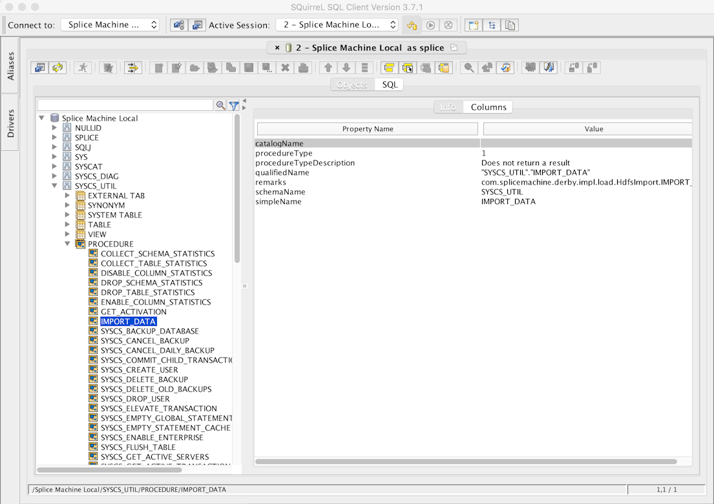
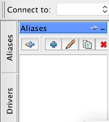
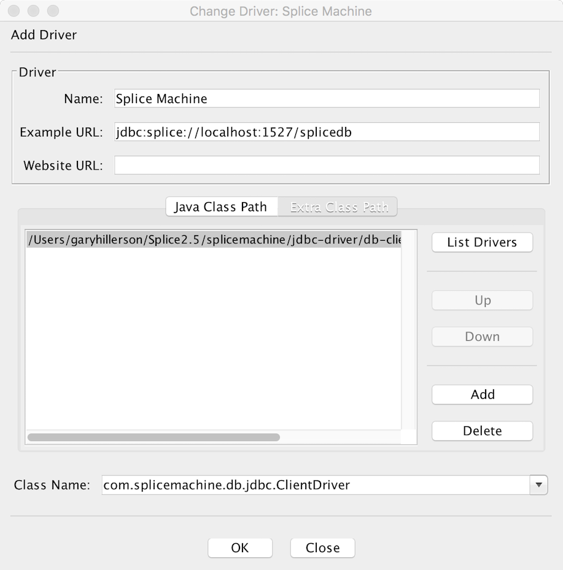
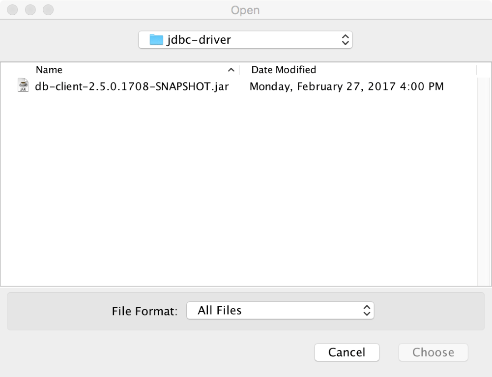
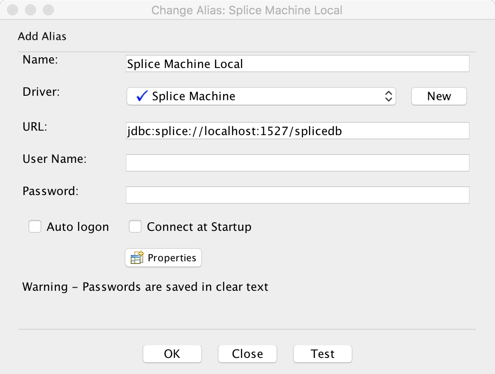
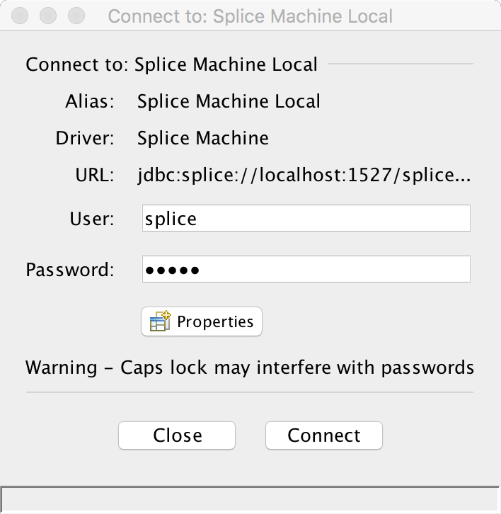
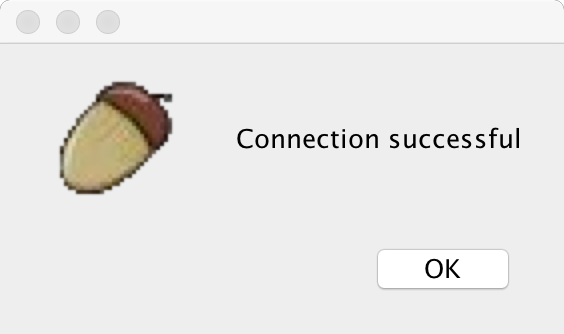

Connecting SQuirreL with Splice Machine Using JDBC
This topic shows you how to connect SQuirreL to Splice Machine using our JDBC driver. To complete this tutorial, you need to:
- Have Splice Machine installed and running on your computer.
- Have SQuirreL installed on your computer. You can find directions on the SQuirreL web site (http://squirrel-sql.sourceforge.net/); you can also download a free trial version of SQuirreL from there. You must also install the Derby plug-in for SQuirreL.
Connect SQuirreL with Splice Machine
This section walks you through configuring SQuirreL to connect with Splice Machine
-
Install SQuirreL, if you’ve not already done so:
-
Install the Derby plug-in for Squirrrel
This plug-in is required to operate with Splice Machine. If you didn’t select the Derby plug-in when you installed SQuirreL, you can download
-
Start a Splice Machine session on the computer on which you have installed SQuirreL
Splice Machine must be running to create and use it with SQuirreL.
-
Configure a Splice Machine connection in SQuirreL
Follow the instructions in the next section, Configure a SQuirreL Connection for Splice Machine, to create and test a new connection in SQuirreL.
-
Connect SQuirreL to Splice Machine
In SQuirreL, open the connection alias you created, enter your credentials, and click the Connect button. Your database will display in SQuirreL, and you can inspect objects or enter SQL to interact with your data.

Configure a SQuirreL Connection for Splice Machine
Follow these steps to configure and test a new driver and connection alias in SQuirreL.
- Start a Splice Machine session on the computer on which you have installed SQuirreL
- Open the SQuirreL application.
-
Click the SQuirreL Drivers tab, which is near the upper left of the window:

-
In the Drivers tab, click the blue + sign Create a New Driver icon to display the Add Driver window.
-
Name the driver and enter
jdbc:splice://localhost:1527/splicedbin the Example URL field:
Use localhost:1527 with the standalone (local computer) version of splicemachine. If you’re running Splice Machine on a cluster, substitute the address of your server for
localhost; for example: jdbc:splice://mySrv123cba:1527/splicedb. -
Click the Extra Class Path button, and click the Add button.
-
Navigate to and select the Splice JDBC Driver jar file. which you’ll find it in the
jdbc-driverfolder under thesplicemachinedirectory on your computer.
-
Now, back in the Add Driver screen, click the List Drivers button verify that you see the Splice Machine driver:
com.splicemachine.db.jdbc.ClientDriver -
Click the OK button to add the driver entry in SQuirreL.
-
-
Create a connection alias in SQuirreL
-
Click the Aliases tab in the SQuirreL window, and then click the Create new Alias (blue + sign) button.
-
Enter a name for your alias and select the driver you just created from the drop-down list

-
Click the Test button to verify your connection.In the Connect screen, enter
spliceas the User: value andadminfor the Password: value.
-
Click the Connect button to verify your connection. You should see the success message:

-